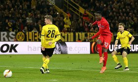

Ще по ходу команди сіткою Кубку Ліги стало зрозуміло, що Клопп не надто розраховував на третьосортну чашку. Але коли резерв, а згодом уже напіврезерв зумів пробитись до півфіналу КЛ, на двоматчеву дуель проти Стока вийшов цілком бойовий склад. Хоча паралельним курсом боротьбу на ранній стадії за найстаріший футбольний трофей бились здебільшого глибокі резервісти, гравці академії та Хосе Енріке.
Попри лукавство на словах, що КА це важливий трофей і за нього виходять битись найкращі, пріорітети Юргена читались неозброєним оком. І якби на шляху команди був хтось слабший за ВХ, команда напевно спромоглася б на щось більше за виліт на зимній стадії. Але навіть попри виліт у переграванні, гра молоді справила непогане враження, а першою фразою в їх виправдання залишається сказати лише "не вистачило досвіду".
Думається, що якби на шляху команди в КА трапився Евертон чи Челсі - склад був би зовсім іншим. Це підтверджує настрій на дербі із Юнайтед (в ЛЄ в тому числі) та Ірисками - максимальна самовіддача, шкода у чемпіонаті Манчестеру вкотре вдалось витягнути гру перчатками Де Хеа (барона Мюнхаузена писали не з іспанця часом?) та за рахунок вбивчої реалізації. Хоча про матчі на євроарені варто писати дещо в іншому ракурсі - ставлення до них у герра Норберта дуже вже відрізняється від острівного.
Проте варто віддати належне німецькому спеціалісту, наскільки він тонко розуміє вимоги публіки та можливості гравців одночасно. Це яскраво помітно було після спарених зустрічей із МС - в обох матчах вийшов найсильніший склад і намагався грати максимально самовіддано. На відміну від містян, які навіть розбавленим складом у матчі чемпіонату "злили" гру без шансів та бажання. Причому це не виглядало і не могло бути реваншем - це просто чітка позиція тренера до важливих суперників. І це не може не радувати, адже не повторюється надхитрий трюк взяти малою кров'ю Бернабеу.
Найкращим матчем команди (як спільного механізму) при Клоппі я вважаю виїзд на Селхетс Парк. Алан Пардью гарно налаштовує гравців на подібні зустрічі, тому і не дивно, що відразу по перерві гості горіли 1:0 без шансів за грою. Через десяток хвилин поле залишив Мілнер, побачивши перед собою заслужений червоний шматок паперу (чи пластику?). Що цікаво, Джеймса уже було переведено на фланг захисту, аби підсилити тиск на суперника. Юрген не робив замін, чітко давши зрозуміти свою позицію стосовно подій на полі - треба відігруватись при будь-яких умовах. Не відомо як би склались події надалі, але захисники Крістал Пелес самі зробили подарунок Фірміно - 1:1. З огляду на перебіг подій, рахунок на табло був просто Божественним, але німець гне свою лінію - підсилює напад Крістіаном Бентеке.
Власне чому цей матч сподобався найбільше? Якщо Ви бачили колись щось божевільніше за агресивний фланговий відбір в нападі від Ловрена у меншості - поділіться. В такі моменти відчувається неабиякий приплив енергії, який певно і передався гравцям. Хлопці реально бились на полі та намагались вирвати перемогу з подвоєною енергією. Такої я не відчув навіть у славнозвісному матчі проти Дортмунда. Навряд вихід Туре замість Фірміно на 89-ій хвилині був геніальним тактичним ходом з підсилення нападу, але команди відреагували по-своєму. Господарі спробували вирвати свою першу перемогу в новому році (надворі уже був квітень, на хвилинку), а бельгійський резервіст у червоній формі тим часом дуже майстерно не перестрибнув руки голкіпера - маємо пенальті в останні секунди матчу. Сам же потерпівший виконав вирок - ось вам за прощання Джеррарда на Енфілді та за першу поразку Клоппа. Мабуть у мене просто уже накипіло до орлів :)
Якби у цьому матчі Юрген відреагував би на гол Бентеке, як і на зрівняний рахунок у матчі Кубку Ліги про МС - це взагалі було б епічно. Після такої реакції від тренера я навіть погодовся із поразкою (чесно), адже найцікавіше у той день уже по-факту було.
Без прив'язки до даного матчу, але таке спостереження - Мілнер в опорній зоні ніякий, якщо суперник гарно грає центром. Можна, звісно ж, показувати статистику Джеймса кенійцям, але він частково нагадує на цій позиції Джеррарда річної давнини - його можна доволі просто хитнути і обійти. Якщо команда грає в агресивний колективний пресинг, то ці недоліки "нудного" просто нівелюються партнерами та компактністю. Але якщо підстраховка і сама потребує підстраховки, то це не до Джеймса. Помітив кілька його явних недопрацювань під час сезону; другий гол Севільї із розряду таких, про що я веду мову. При усій повазі, але навіть Джан, якому не вистачає книжки за пазухою, візуально не дозволяє собі таких провалів, нехай навіть ціною порушення правил. Мабуть Мілнеру таки потрібно повертатись до найнадійнішого помічника - бокової лінії, зі своїми кросами він там корисніший.
Підсумовуючи останній абзац із хворою ахілесовою Хендерсона, ростом Аллена та віком Лукаса - чутки про ОПЗ радують. Тут скоріше звісно ж іде мова про можливий трансфер "нового" Канте, ніж про підписання реального. І тут я обома руками за двох молодих, ніж за одного Швайнштайгера/Крооса. Ключовою характеристикою якоря/б2б вважаю невтомність/бажання, і лише потім читання гри, вибір позиції та наявність передачі у дотик на 50 з гаком метрів.
Багато не говорили про фланги атаки - бо їх не було. Айб спробував спалахнути при новому наставнику, але при більших командних вимогах скис остаточно, хоча фізичні дані для гри на фланзі у нього пречудові. Коутіньо, Лаллана, Фірміно - це гравці не флангові, один лише Джеймс там виглядав не гірше порівнюваного Блащиковскі. Взагалі скупа гра біля бровки була побудована від кадрів, точніше не побудована. Про активність захисників промовчу, адже чорно-жовті також виглядала дуже цікаво у нападі силами Піщека та Шмельцера. Хоча Юрген довгенько прощупував цей момент і згодом фактично відмовився від нього. Якщо хтось заперечить, штибу "на фланзі там норм роздавали атакуючі хави", то це було скоріш від їх зміщень в центр і подальшої взаємодії. Ну не виглядало це козирями у грі Клоппа, наприклад, як це виглядає навіть у Фоменка.
Не знаю, на якій позиції грає Груїч, але навіть повернення Марковіча може не допомогти. В даному контексті не розумію радості з приводу можливого возз'єднання німця із Гьотце. Хіба якщо прощатись із кимось із тріо атакуючих основних хавів, а то і не з одним. Але нехай краще підпишуть якогось ноунейма, але профільного крайнього. Якщо вже так не терпиться змінювати схеми по ходу матчу, нехай підпишуть універсального Ярмоленка (є підозра, що він би цілком міг стати основним).
Особливо багато слухів на позицію лівого захисника - тут сперечатись не буду, Морено не вражає, м'яко кажучи. Часто невиправдано(!) лізе в атаку, що призводить до ніби шикарних забігів у захист і шалених підкатів. Хоча це треба ділити на безголовість Сако - їм не можна грати поруч. При усьому бажанні Мамаду - його не даремно не взяли на Євро. Тримати на відстані витягнутої руки серцевосудинні препарати, як тільки захисник пасує/стелиться у підкаті/грає один-в-один - це недозволена розкіш. Думається, першим вибором у центрі захисту буде Ловрен із Матіпом (той ніби з головою), цим же можна пояснити і вольові якості Шкртела, які в один прекрасний момент виявились не потрібні Клоппу і він віддав перевагу якісній позиційній грі грендфазера Туре.
Дуже розмито усе виглядає із нападом. Ніби і чотири форварди, але однозначної надії ніхто не подає. Старрідж - це у випадку явного контролю гри і надії на індивідуальну майстерність. Дівок ефективний для швидких випадів та навали. Такий Бентеке хороший в першу і останню чергу для штурму. Інгз - це для пресингу, чим розвантажить Фірміно, який гармонійно там виглядав проти ТОПів. От і виходить, що в усіх є явні козирі і такіж яскраві недоліки. Юрген розуміє важливість усіх аспектів, тому цікаво як буде вирішуватись проблема (як мінімум зарплатної відомості). У два форварди Юрген грає хіба останні 10-15 хвилин, причому другим бомбардиром завжди може випустити умовного Колкера.
Звісно, найбільш інтригуючим моментом у новому сезоні буде гра команди. Але особисто для мене не з точки зору наявних прізвищ у стартовому складі, а з точки зору командних завдань через призму фізпідготовки. Трьохразові тренування на піску в горах і таке інше повинні дати свої плоди, адже левову частину сезону Клопп витратив на підведення гравців до спільного фізичного чисельника. Тут же варто сказати, що просто перебігати ТТХ можливо, але бажано перегравати їх ще й командно та тактично.
Наостанок скажу, що восьме місце зовсім не свідчить про реальну силу команди. Очевидно, що злиті в угоду ЛЄ матчі коштували трохи більше 6 очок (нехай навіть теоретичних), які могли трансформуватись в ЛЧ. Але в головний Єврокубок червоним поки зарано, і ЮК добре це розуміє, тому мабуть і сказав підопічним злити другий тайм фіналу проти іспанців:)